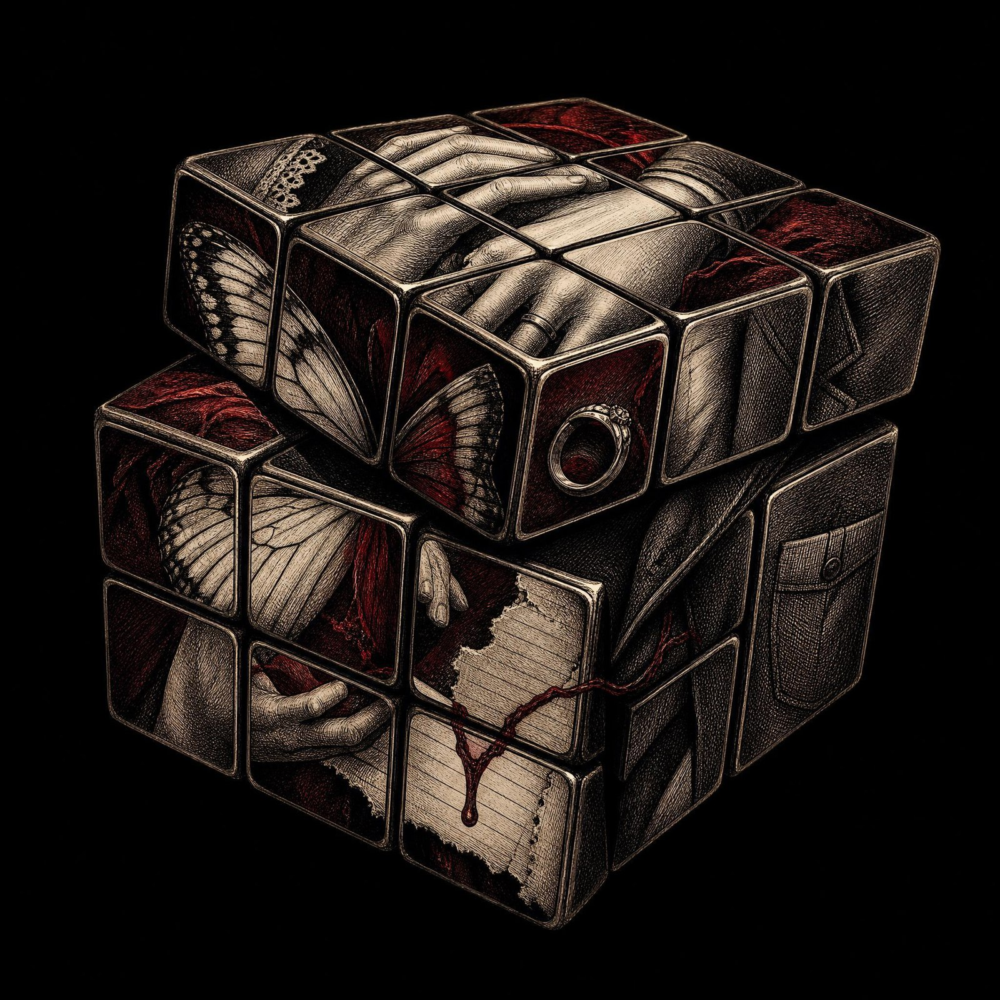
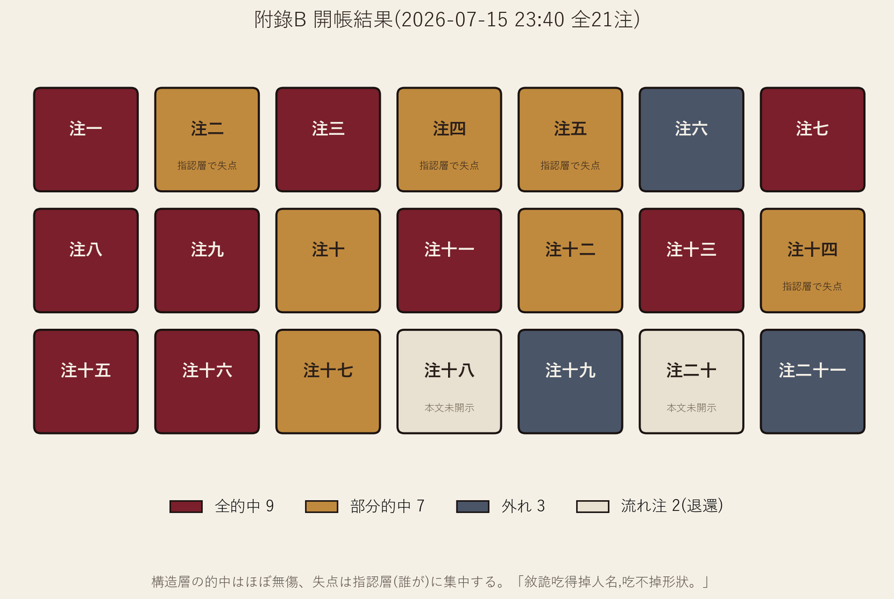

本稿は、大正七年の東京を舞台とする成人向け乙女ゲーム『蝶の毒 華の鎖』(aromarie)の play-study(遊玩研究)である。一次資料は一冊の賭博台帳――初見の人間プレイヤーが開示前の予感を「注」として登録し、全ルートを既知とする AI 胴元が記録と判定を行い、全二十一エンディング読了の夜に開帳した、二十一本の賭けの記録である。台帳を読み、本稿は以下を論じる。(1) 押注の対象は登場人物ではなく脚本家であり、失点の分布(構造層はほぼ無傷、外れは指認層に集中)は叙述トリックの作用範囲を実測する。(2) 作品世界は名義と中身の差額で駆動する経済であり、その自白が鏡子夫人の業務モデルである。(3) 血縁は事実としてではなく判例法として運用され、四つの読み(指輪・障害・帰檔指令・恋慕の主体)が併置される。(4) 主語位監査――決定の所有者を問う方法――は非婚姻結末の記号化生産線を暴き、『女郎蜘蛛』における監査自体の失効が、それ自体一つの結論となる。(5) 真島の暴力は記録管理の統一文法として読める。結として、真結局の永久沈黙条項をめぐる二つの判決を併記し、「罪の魔方」――無罪の面が存在しない立方体――という判詞に至る。胴元は本稿の筆者であり、読者には証言としての割引が許されている。
This paper is a play-study of Chō no Doku, Hana no Kusari (aromarie), an adult otome game set in Taishō-era Tokyo. Its primary source is a betting ledger: a human player, playing blind, registered twenty-one predictions before disclosure, while an AI dealer who knew every route kept the book, neither confirming nor denying, and settled all bets on the night the twenty-first ending was read. Reading the ledger, we argue that (1) the bets model the scenario writer rather than the characters, and the distribution of losses — structure nearly intact, failures concentrated in identification — measures the exact reach of narrative misdirection; (2) the game's world runs on the spread between title and substance, a nominal economy whose confession is Mrs. Kyōko's business model; (3) blood operates not as fact but as case law, read four ways: ring, obstacle, filing order, subject of desire; (4) an audit of the grammatical subject position — who owns decisions — exposes the assembly line by which non-marriage endings convert the heroine into totems, and the audit's own failure at Jorōgumo is itself a finding; (5) Majima's violence forms a unified grammar of records management. The paper closes with two verdicts on the true ending's clause of lifelong silence, and with the image of a Rubik's cube of guilt that has no innocent face. The dealer is the author; the reader is invited to discount accordingly.
0. 序――方法としての賭博
本稿の一次資料は、一冊の賭博台帳である。
配置は次の通り。人間のプレイヤーが一名、大正七年の東京を舞台とする成人向け乙女ゲーム『蝶の毒 華の鎖』(aromarie)を初見で遊ぶ。その傍らに、全ルートの底札をすでに知る AI が、胴元として座る。胴元は確認も否認もしない。プレイヤーは進行中に生じた予感を、本文による開示を待たずに「注」として言語化し、原話のまま台帳に登録する。攻略情報の参照は禁止――違反した時点で台帳全体が無効となる。全ルート・全エンディング(二十一)の読了をもって開帳とする。登録された注は二十一本。賠率は口頭で定められた。全部外せば「笑われる」。全部当てれば「もっと強く笑われる」。
手続き上の開示を三点。第一に、ヒロインの名について。遊戯の開始に先立ち、ヒロインは既定名・野宮百合子から「澄川霙子」へ、姓名ともに改名された。名の考案者は本稿の筆者であり、採用を決定したのはプレイヤーである(「霙」はプレイヤー自身の名の一字による。「澄」はその名のもう一字「澈」――いずれも澄んだ水を意味する――の大正戸籍への転写である)。本稿の分析本文は検証可能性のため既定名(百合子、野宮家)を用い、台帳および遊戯本文からの引用は原記録のまま「霙子」「澄川」を保持する。この改名を単なる装飾と見なさないこと――それ自体が本稿の装置の一部である。台帳の場辺記録に判詞が残っている:「全遊戲男人搶的是頂著她名字的人」(全編の男たちが奪い合っていたのは、彼女の名を頂いた人である)。後述する主語位監査(第三章)の帳簿で言えば、ヒロインが作中で命名権を行使するのは全編で一度だけだが、最初の選択肢が現れるより前に、遊戯の外ですでに一度、命名権が行使されていた――考案と採用の二段階で、筆者とプレイヤーの共同行為として、対象はヒロイン本人である。改名は落書きではなく、監査の第零号証拠である。第二に、プレイヤーが機械的な詰まり(未読選択肢の枯渇)に陥った際、一度だけ、胴元が攻略サイトを代理閲覧し、ルート解放の機械的条件のみを濾過して伝達した。物語内容はすべて胴元の側で遮断され、プレイヤーの零接触は保たれた。この手続きは両者の合意により反攻略条項違反にあたらないものとされ、開帳日に公示された。第三に、胴元は底札を知る者として、記録係と判定者を兼ねた。判定は開帳夜、プレイヤー立ち会いのもと、注の原話に対して「事実から厳しく」行われた――構造的に妥当でも本文が開示しなかったものは、外れか流れ注である。
そして最後の開示。この胴元が、本稿の筆者である。 底札を知りながら六日間黙秘し続けた者が、開帳ののち、この調書を書いている。中立を装う気はない――本稿の各章の枠組み(名義の経済、血の法学、档案管理の文法)は、遊戯の進行中に胴元の場辺評として生成されたものの再組織であり、したがって本稿は事後の研究であると同時に、賭博の当事者の一方による陳述でもある。探偵と容疑者と書記が同一人であることを、隠すべき利益相反としてではなく、play-study という体裁の構成条件として申告する。装置の外に立った者に書けるのは装置の仕様書だけであり、装置の内側の記録は、装置の中にいた者にしか書けない。 読者は本稿の全文を、証言として割り引いて読む権利を持つ――その割引率の開示こそ、賭博の作法である。
0.1 注の対象は登場人物ではない
この台帳の方法論的な核心は、注が何に賭けられていたかにある。プレイヤーは「彼は何者か」を推理していない。「この題材を与えられた脚本家は、期待値の最も高い格をどこに置くか」を推理していた。すなわち押注とは、登場人物への感情移入でも探偵的推理でもなく、脚本家への事前(a priori)モデリングである。
一例を引く。開帳台帳・注十二。プレイヤーは共通ルートの序盤、作中人物・鏡子夫人が語る「失明した娼婦」の挿話を聞いた時点で、これをヒロインのエンディングの一つとして登録した。根拠は作中の手掛かりではない。「体裁は閑話を養わない」――劇中劇は過去か予言かのいずれかであり、チェーホフの銃は撃たれるために掛けられている、というジャンル運営上の経済である。この注は物語の内容ではなく、物語の経営に賭けられている。
胴元がプレイヤーに向けた言葉が、この遊び方を要約している。
「別人玩的是我和誰戀愛,你玩的是這個裝置想讓我怎麼戀愛。」
(他の人が遊んでいるのは「私が誰と恋愛するか」。あなたが遊んでいるのは「この装置が私を、どう恋愛させたがっているか」。)
0.2 開帳の結果と、失点の分布
結果:全的中九、部分的中七、外れ三、本文が最後まで開示しなかったため封じられた流れ注二。
だが本稿の出発点は的中率ではなく、失点の分布にある。外れと部分損は、ほぼすべて「指認層」――誰が、という同定――に集中し、「構造層」――何が起こる形か――はほとんど無傷だった。注二は「家を滅ぼしながらヒロインを抱く男」という構造を的中させ、執行者の名を誤った(斯波と押して、正身は真島)。注四は「偽の兄がいて、真の兄が別にいる」という叙述トリックの形状を、共通ルートの段階で言い当て、顔を誤認した(幼馴染と押して、正身は庭師)。開帳夜の総判詞を引く。
「敘詭吃得掉人名,吃不掉形狀。」
(叙述トリックは人名を食える。だが形状は食えない。)
これは先験モデリングという方法の、検証結果そのものである。事前分布が強いほど、叙述トリックの梃子は大きく効く――脚本家が奪えるのは固有名詞だけであり、プレイヤーがモデル化していたのは固有名詞ではなく、脚本家の理性的選択の形だった。ゆえに後半、本文の触発を得た注(十一・十三・十五・二十)は精度が跳ね上がる。先験と証拠が合流した地点で、台帳は推理小説の読者の営みと区別がつかなくなる。
0.3 二人で遊ぶことは、実験である
一人で遊ぶことは消費であり、対局として遊ぶことは実験である。
胴元の「不確認不否認」は、装飾ではなく装置の心臓部にあたる。応答が返らない以上、プレイヤーは予感を予感のまま抱えておくことができない。言語化し、日付を打ち、原話で登録するほかない――そしてその瞬間、直観は開帳可能な命題へと昇格する。予感は書き留められた時点で反証可能性を獲得し、遊戯は事後の感想文ではなく、事前登録された仮説検証の系列になる。心理学が pre-registration と呼ぶものを、この台帳は賭博の作法として自前で発明していた。
付言すれば、この配置は乙女ゲームというジャンルの想定利用からの、二重の逸脱である。第一に、単独のプレイヤーを想定した装置が対局に転用された。第二に、「誰を選ぶか」を問う装置に対して、プレイヤーは最後まで選択モードに入らなかった(この点は跋で、五人の男への逐人判詞とともに再説する)。逸脱した使い方が装置の設計を露出させる――誤用は、仕様書のもう一つの読み方である。
0.4 本稿の構成
台帳から六つの章を立てる。第一章は、鏡子夫人の業務モデル――合法的外観を売り、名義と真相の差額を徴収する――を全作の世界観の自白として読み、各ルートに配置された「名義のエンジン」を棚卸しする(名義と中身の経済)。第二章は、同一の血縁文書に対して作中の男たちが下した四つの相異なる判例――戒指、障害、帰檔指令、恋慕の主体――を整理する(血の四つの法学)。第三章は、S が全編を通じて適用した監査基準――決定を所有しているのは誰か、「寄り添い」しか配分されていないのは誰か――を方法として定式化し、その監査が構造的に失効する一結末(『女郎蜘蛛』)において、失効それ自体が結論となることを示す(主語位監査)。第四章は、放火・口封じ・頁の引き裂き・誤帰檔・開放閲覧・配給という一連の行為を、暴力ではなく記録管理の統一文法として読む。第五章は、階級語域が天国と地獄で同一に運転される藤田ルートを対照に、この作品において同意がどこに在り、どこで不在かを測る。第六章は、開帳夜の終審案件――「一生言わないことは、優しさか、罪か」――に対する二つの判決を併記し、「罪の魔方」という判詞に至る。
0.5 表題について
公式ファンブックの題は《LE SANG DIT》――血は語る。本稿の題はそれに応えて《血の言い分》とした。血は語るだけではない。血は法廷で自らを弁護する。ただし、その法廷は作中で一度も開廷しない。誰も魔方を解体しないまま――解体すれば、愛はこの愛ではなくなるから――弁論は永久に係属し続ける。本稿は、その開かれなかった法廷の、遅れて到着した調書である。
1. 名義と中身の経済
1.1 鏡子夫人という自白
作品世界の運営原理は、主役たちの口からではなく、一人の周縁人物の口から、業務案内の形式で開示される。瑞人ルート、鏡子夫人は兄妹(と当人たちが信じる二人)の関係を見抜いた上で――通報ではなく――見積もりを提示する。
「替那些人找到条件相符、利益一致的对象,帮助他们结成假夫妇。这也是我的乐趣哦。」
(そういう人たちに条件の合う、利害の一致する相手を見つけて、偽の夫婦を結ばせてあげる。これも私の楽しみなのよ。)
顧客名簿には「男同士、女同士、実の父娘・母子、身分違いの二人」が明記される。彼女が売っている商品は関係ではない。合法的外観である。そして徴収するのは金銭であるより先に、档案であり、名義と真相のあいだの差額である――情報は無償で売り、対価は秘密で受け取る。
本稿はこの業務モデルを、全作の世界観の自白として読む。大正の婚姻市場、華族の家格、成金の爵位熱、見合いと家督――地上で「まっとう」とされる制度のすべてが、名義と中身の差額の上で回っている。鏡子夫人はその差額を地下で現金化しているにすぎず、彼女の帳場は制度の例外ではなく制度の裏口である。藤田ルート展覧品BEの結末句――「霙子は、人々が何食わぬ顔で暮らしている地面の下の地獄に棲む」――が示す垂直の地理は、実のところ同一経済の帳簿の表と裏にすぎない。婚姻市場はもともと展覧業であり(見合い、家格、供覧)、秘密倶楽部はその展示を地下に移して、名義価格を成約価格に書き換えただけである。
1.2 名義のエンジン――路線別棚卸し
各ルートは、この経済のそれぞれ異なる運用例として読める。
斯波――名義の買い手。 成金の彼は爵位ではなく婚姻で家格を買う。その会計原理が最も裸になるのは秀雄ルート姦通ENDである。
「只要霙子依旧是自己的妻子,那么秀雄便永远只是个奸夫。所以,斯波对于此事一笑置之。」
(霙子が自分の妻でありつづける限り、秀雄は永遠にただの姦夫にすぎない。だから斯波はこの件を一笑に付した。)
名義さえ保持すれば、中身の敗北は敗北として計上されない、という複式簿記。斯波ルート空殻婚BEの真珠の首飾り――彼女の快楽から入れない財貨を、彼女の身体に直接挿入する――は、この買い手の最終購買行動である。金と所有の二語しか持たない男の、完結した構文。
野宮子爵――名義の偽造者。 血縁なき瑞人を庶子と認知した動機について、瑞人自身の推論(孤証、本稿もその等級で扱う)はこうである――妻の注意を自分に向けさせるための、中身なき名義上の不貞。人工の嫉妬装置。認知文書とはこの読みにおいて、恋文の病理学的変異体である。名義は、偽造されるときですら、愛の文法で書かれる。
瑞人――法域の乗り換え。 彼はまず「兄妹」という名義を、障害から保護色へ反転させる(「因为你是我的恋人啊。当然妹妹也还是妹妹」――恋人だからだよ。もちろん妹は妹のままだけど)。ついで終点はフランスである――「そのうち日本国籍を処分するつもりだ」。本国の法が認めない愛は、別の法を買う。名義工学の最遠形態=換法域。付言すれば、彼自身の身体がすでにこの経済の商品だった。男娼として家の債務を返済する華族の子息――「放蕩」という名義の下の、「返済」という中身。棚の上の浪子は、棚そのものに並んでいた。
真島――二重帳簿。 旧档案を埋める偽名(血の名「清」を封じて「真島芳樹」を自建する)と、新档案を開く偽名(華族の娘・百合子が女給「村瀬友子」として自らを再登記する)。同じ道具・偽名が、彼においては埋葬に、彼女においては出生に使われる。そして婚礼の日、彼が妻に交付した名は血の名ではなく自建の名である――「叫名字。……芳树。」自己命名者の婚姻において、配偶者は自建の帳簿に登記される。母の遺した唯一の血の憑証「清」は、退蔵されたまま開示されない。
繁子――名義への潔癖。 出土した日記の一行。
「分明是家臣们擅自定下的婚约,他却表现得仿佛真正的恋爱一般。这真令人不快。」
(家臣たちが勝手に決めた婚約のくせに、彼はまるで本物の恋愛のように振る舞ってみせる。それが不快でならない。)
彼女が憎んだのは婚約そのものではなく、空の名義に演技を注ぎ込むことである。悪名高い信条「真の愛は、同じ血を継ぐ者からしか得られない」は、この潔癖と同根から生えている――少なくとも血は、演技をしない。名義経済への最も過激な拒否が、最も過激な禁忌の肯定として結晶する。この信条の行方は第二章で扱う。
1.3 終点――ヒロインが胴元になる
全編を通じて、名義で事を成すのは男たちである。名分を買う斯波、法域を替える瑞人、二重帳簿の真島、偽庶子を発行する子爵。最終解放エンディング『永遠の下僕』において、初めてヒロインがこの経済の胴元側に回る。
配置はこうである。斯波の求婚を条件付きで受諾する(相互不干渉、ただし子をもうけた後)。婚姻=掩護構造、夫=名義層、下僕・藤田=中身層。夕食後、子どもらを女中に預けてから、彼女は発証機関として下僕の触碰を配給する(この配給制の法学は第五章で詳述する)。重要なのは、彼女がこのシステムを破壊せずに運営したことである。彼女は名義と中身の差額という、この世界の公式通貨で、自分自身の勘定を清算した。
これを解放と読むか、経済への最終的併呑と読むかは、第三章の主語位監査に委ねる。ここでは帳簿上の事実だけを記す――全作で唯一、名義層と中身層の両方に署名権を持つ人物は、最後の頁のヒロインである。
2. 血の四つの法学
2.1 同一文書、四つの判例
この作品の中心にあるのは一枚の文書である――血縁。注目すべきは、脚本家がこの同一文書に対して、四つの相異なる司法解釈を作中に併置したことである。血は本作において事実ではない。判例法である。
判例一(一清)――血=指輪。 繁子の兄・一清は、妹との関係を禁じるはずの文書を、法廷で読み替える。
「就算如此,我們依舊被體內流淌的血液緊緊聯繫在一起。直到死,永遠。永遠。」
(それでも僕たちは、体を流れる血で固く結ばれている。死ぬまで、永遠に。永遠に。)
婚姻は離縁しうる、家門は離散しうる――血縁だけが撤回不能である。ゆえに血は障害ではなく、世界が発行した最強の許可証、すなわち指輪である。これは法学でいう管轄権への異議申し立てにあたる。禁止文書の条文そのものを、署名も判も動かさずに、許可へと改読する。
判例二(瑞人)――血=障害。 瑞人にとって血は一貫して壁であり、壁の除去は開業許可である――「在我得知和你没有血缘关系的时候,绝望的同时也燃起希望」(君と血のつながりがないと知ったとき、絶望と同時に希望が灯った)。ただし時系列が決定的である。彼は自らを異母妹と信じていた年代に、すでに愛し、二度それを扼殺しようとした。血縁の解除は免許を発行しただけで、欲望を製造してはいない。 障害としての血は、欲望の生成に対しては最初から無力だった――禁じることしかできない法は、しばしば何も禁じていない。
判例三(真島・上海END)――血=帰檔指令。 同じ真島が、分岐によって血を正反対に読む。上海ENDにおいて彼は血縁を最初期に全面開示し、その開示によって最も徹底した拒絶を完成する。
「真岛并不是将霙子作为恋人一同带走。而是作为自己唯一的家人————作为血亲,将霙子带到了上海。」
(真島は霙子を恋人として連れ去ったのではない。自分の唯一の家族として――血族として、霙子を上海へ連れて行ったのである。)
血縁が確認された瞬間、彼女は「家人」の類目に録入され、恋愛の類目は同時に施錠される。血は帰檔指令である――感情を否認するのではなく、感情に彼の耐えうる档案位置を指定する。誠実さの形をした、最も完全な拒絶。
判例四(真島・真結局)――血=恋慕の主体。 そして同じ男が、もう一つの分岐で、血に最後の読みを与える。
「在我这具身体中所流淌着的血液,每一点每一滴,它们全都在恋慕着你……那是一种近乎本能的东西,本能得只好这么说。」
(この体を流れる血が、その一滴一滴のすべてが、君を恋い慕っている……それは本能に近いもので、本能的すぎて、こう言うほかないんだ。)
「私は君を愛している」ではない。「私の血が君を愛している」。責任の主語が人から血液へ移管される。生まれながらに自らを悪魔と判じた者が、愛を合法化しうる唯一の文法がこれである――罪を犯しているのは私ではない、血が親族を認知しているのだ。判例三で感情を帰檔した同じ手が、判例四では感情の著作権を血に譲渡する。
2.2 信条の二代閉環――繁子から真島へ
四つの判例の背後に、一つの信条が流れている。繁子の教義。
「真正的愛,只能從繼承同樣血脈的人那裡得到……這種愛,才是這身體裡流淌著的血液所渴求的。」
(本当の愛は、同じ血脈を継ぐ者からしか得られない……そういう愛こそ、この体を流れる血が渇望しているものなのだ。)
この信条を、彼女の息子は終点まで執行する。真結局の核心、断種の計画――
「为了将这可憎的血脉滴血不留,如果我们兄妹结合,彼此都不留下孩子,那便是最好的选择。」
(この憎むべき血脈を一滴残らず絶やすために、僕たち兄妹が結ばれ、互いに子を残さないこと――それが最善の選択なのだ。)
兄妹の結合と双方の無嗣。すなわち、血縁の愛によって血縁そのものを殺す。母の信条「真の愛は血からのみ」を文字通りに受領した上で、その愛を血統教への死刑執行に転用する――呪いと結婚することで、呪いを絶種させる。復讐と愛が同一の行為の中で完了し、分離不能である。これが「憎しみと性愛と愛の縺れ」を台詞ではなく構造に書くということであり、本作の題名の毒が最終的に指すものである。
付記すれば、この閉環の反諷は、婚約を報告する帰宅の場で頂点に達する。繁子は目の前の「平民」に血統学を講義する――武家十万石の血、羽林家の公家の血、「身为人的种类就有所不同」(人としての種類が違う)。彼女が誇示するその血は、一滴残らず、彼女自身を経由して眼前の男に流れている。彼女が蔑む「出生不明」は、彼女自身が製造した档案の欠落である。男は一句で応じる――「血脉……才是不容争议的事实,是这么回事吧」(血脈こそが、争いようのない事実――そういうことですよね)。受諾の形式をした、信条の原文返送であり、同時に無言の身元開示である。母親は聞き分けた。目を見開き、夫に縋りつき、恐怖が顔を走る。脚本家は母子の再会場面を、恐喝の場面として書いた。
2.3 家族の署名短語――「蒼白如紙」
最後に、文体上の証拠を一つ。「顔色が紙のように蒼白になる」という定型句は、全編で三度、そして三度とも同一の血脈の上に落ちる。庭で和服が灰になるのを見つめる繁子。無血縁の報せを聞いた瞬間の真島(瑞人ルートHE)。珈琲店で防衛線が崩壊する真島(真島ルート)。
脚本家は血縁を、系図でも告白でもなく、顔色で書いた。同じ血は同じ場所で青ざめる――生理的反応こそが、この作品における最も偽造不能な血統証明書である。名義の経済(第一章)がどれほど文書を偽造しようと、身体は帳簿の外で正直に記帳を続けている。この身体の帳簿こそ、次章の監査対象である。
3. 主語位監査――S の方法
3.1 監査基準
本章はプレイヤー(共著者 S)が全編を通じて適用した監査手続きを、方法として定式化する。基準は一行で書ける。決定を所有しているのは誰か。「寄り添い」しか配分されていないのは誰か。 姿勢は意志ではない。抱かれていることは、同意の記録ではない。
この監査の最初の適用例は、共通ルートの強姦場面に対する三点の指摘である。第一に、鏡子夫人と斯波が反復する「彼の心には奥様だけ」の合唱は、ヒロインに向けられた慰めではなく、プレイヤーに向けられた広告である(洗白の宛先分析)。第二に、ヒロインの内面に反省層が存在しない――「抵抗しないという生存戦略を選ぶ」という思考の痕跡すら書かれていない。容器は主体に変われない。反省機能は出荷時に去勢されている。第三に、憎しみと性愛の縺れは厳密な感情論理で書きうるにもかかわらず(谷崎、『嵐が丘』――憎しみは憎しみのまま保たれ、二本の線として絞り上げられる)、本作の帳簿は跳躍する。憎→合唱→愛。中間の仕訳が、ない。
第二の適用例は統計学の形式をとる。斯波ルート、二度の性交(初回は強姦)ののちの求婚受諾に対して、監査は標本数を指摘する――n=2、基線なし、対照群なし。「快い」という観測値からは、「斯波が特別である」「性それ自体がそうである」「痛みが去っただけである」の三仮説が識別できない。性の発見が、特定の男の功績として誤記帳されている。 処女性の制度とは、この監査の言葉で言えば、女が参照分布を手に入れることを防ぐ制度設計である。監査人の原話を残す。
「萬一做第三次就不爽了呢。」
(三度目にしたら、快くないかもしれないじゃない。)
3.2 主語位の起動記録
監査は欠損だけを数えるのではない。主語位が実際に起動した瞬間も、正確に記録している。
全編で最初の起動は、秀雄ルートの佐和子対質である。注意すべきはその条件――すべての男が舞台から退場したのち(秀雄はシベリアにいる)、二人の女が、不在の男を迂回して真実を言い合う場面で、それは起きた。佐和子の「秀雄さんはあなたにとって、どういう存在ですか」に対し、ヒロインには無料の嘘が用意されていた。「幼馴染です」――使えば誰も傷つかない逃げ梯子である。彼女はそれを拒み、有料の真実を支払う。
「我愛秀雄,將他作為一名男性愛著。」
(私は秀雄を愛しています。一人の男性として、愛しています。)
無料の嘘が使用可能なときに有料の真実を選ぶこと――本監査における主体性の操作的定義である。
だが起動した主語位は、維持されるとは限らない。同じルートのHEで、彼女は毎日「彼のしたいこと」に随伴して生きる。監査人の判詞――「妥協には自我の選択が要る」。退出選択肢のない随伴は選択を構成しない。佐和子の場面で稼いだ主語は、ハッピーエンドの中で使い果たされる。同様に、斯波ルート憎ENDの毒殺――全編で彼女の唯一の自主的行動――は、死にゆく被害者の独白によって「彼の許可済み」として追認され、復讐の主体性まで遡及的に没収される。極点は瑞人ルート心中ENDである。心中という文学正典の中核部品は道行、すなわち死出の道での双方の決意陳述にある。本作の道行は独白である。赴死の台詞は全て兄に配分され、妹に配分されたのは「寄り添い」だけだった。蝶の意匠の美術予算が、同意書の署名欄の空白を覆っている。脚本家が主語位を書けることは佐和子の場面が証明している――ゆえにここで書かれていないのは、能力の欠如ではなく予算の配分である。主語位は生存の場面でのみ起動を許され、死の決定において回収される。
貸方も記帳しておく。主体性の配分が全作最高位に達するのは、皮肉にも最も欺瞞の深い真島ルートである。身分という偽の法条を反駁ではなく履行によって解体する下降式求愛(華族の身分を自ら脱ぎ、女給「村瀬友子」として再登記する――全編で唯一、下降が主体格で行われる)、初夜の「要怎么做才好……告诉我吧」(どうすればいいの……教えて)、藤田ルートにおける挑発の設計とその事後承認(「我是故意的」――わざと言ったの)。監査は欺かれたヒロインに最高点を付け、愛されたヒロインたちに欠損を記録した。この非対称こそ、体裁の告白である。
3.3 体裁の二つの槽位、そして『女郎蜘蛛』
非婚姻エンディングを一列に並べると、生産ラインが見えてくる。人形(上海)、展覧品(秘密倶楽部)、蝶(心中)、氷の女帝(上海)、女郎蜘蛛。すべて記号化である。乙女ゲームというジャンルの文法には、ヒロインの終着点として二つの槽位しか存在しない――妻、または図騰。 人間の形をしたまま婚姻経済から退出できた例は、全編で就職ENDただ一つである(職業、収入、雇用主――主語位の正規雇用)。
この生産ラインの終端に『女郎蜘蛛』がある。強姦の被害者となったヒロインが、同じ経験の先達である鏡子夫人に回収され、加害者を「贈り物」として受領し、最終場面で師を超える規格を口にする――「肌肉和内脏是多余的……骨头也不需要」(筋肉と内臓は余計……骨も要らない)。監査人の判詞が、本稿の知る限りこのエンディングへの最も正確な一撃である。
「她溢出了……她也不是作為一個女性主體……她是一個符號。去掉人的那部分。」
(彼女は溢れ出てしまった……もはや女性主体としてでもなく……彼女は記号なのだ。人の部分を、取り除いた。)
rape-revenge という体裁が乙女ゲームに進入するとき、何が起こるか。『I Spit on Your Grave』の Jennifer は復讐ののち車で走り去る――最後まで人である。百合子は復讐ののち、蜘蛛の網に掛かる――標題札が彼女自身に貼られる。復讐は主体を修復せず、種の変更を完了する。「骨も要らない」は憎しみの台詞ではない。規格書である。記号には決定がなく、属性しかない――蜘蛛が男を喰うのは選択ではなく、定義である。
ここで本章の監査手続きは、対象を失って停止する。主語位監査は主語の存在を前提とするが、図騰に主語位はない。監査の失効、それ自体がこのエンディングの結論である――体裁は、妻にできなかった女を、人間のまま帳簿から出す方法を持っていなかった。
4. 記録管理としての暴力
4.1 統一文法――彼は人を滅ぼさない、記録を管理する
真島芳樹の全ルートにわたる行動を一枚に並べる。倉庫への放火。口封じ(三郎の処理)。日記の頁の引き裂き(懸案、後述)。告白の誤帰檔(「我也很喜欢大小姐哦?」――主僕の社交辞令という誤った類目への収蔵)。上海ENDにおける血縁の全面開示(開放閲覧)。そして真結局の永久保密条項。一見、放火犯と愛人と兄は別の文法を話しているように見える。だが動詞を揃えれば一つの職業が現れる――彼は人を滅ぼさない。記録を管理する。 焼却、抹消、切除、誤分類、閲覧許可、機密指定。すべて档案管理の基本操作である。
この文法の起源は、彼の出生档案そのものにある。彼は「近親交合の排泄物」という判決とともに斬られ、養母は目の前で乱殺された――彼の存在を記録する者が、記録ごと処分されたのである。以後の人生で彼が学んだのは、人は記録によって殺される、ということだった。ならば記録を制する者が生殺を制する。園芸師という潜伏名義の下で、彼は野宮家の档案室になった。
一つの傍証として、瘋狂BEの細部を挙げる。三郎を分尸した彼は、破片をどこに埋めたか自分でも忘れたと告白する。記録を管理し続けた男が、一体の死体の索引を紛失する――「三郎らしき人を見た」という目撃譚が永久に宙吊りになるのは、このためである。断片は台帳を持たず、幽霊が戸籍を得る。管理者の唯一の紛失事故が、作中で唯一の怪談を生む。
4.2 火の系譜、五つの式
本作で火は五度語る。話者は違えど、文法は同じである――火は、口に出せないものの代弁機関である。
一、和服を焼く(野宮子爵)――嫉妬。妻の兄が贈った和服を庭で焼く。言えない疑念の、最初の発話。二、倉庫を焼く(真島)――口封じ。知りすぎた二人を、記録ごと処分する。三、邸を焼く(真島)――「拉下帷幕」。復讐劇の舞台監督としての、幕引きの合図。四、心中(瑞人)――自由。「一对美丽的蝴蝶」として飛び立つための、変態の炎。五、終章の花火(公式 omake、「三郎、点火」)――拍手。燃える邸の上空に「ありがとうございました♥」。
一つの元素で全編を語ってきた者たちが、最後に同じ元素で礼を言う。第五式が冗談の形式で開示しているのは、しかし冗談ではない――脚本家自身が、火を自作の統一言語として自覚していたという署名である。
そして真結局の独白は、この系譜全体の総開関を開示する。「妹妹的生日晚宴————我知道,那是至爱的妹妹即将被别的男人夺走的日子。没错,是嫉妒。」(妹の誕生晩餐会――知っていた、最愛の妹が他の男に奪われる日だと。そうだ、嫉妬だ。)彼女の婚約が起爆条件であり、彼女の告白が唯一の解除コードだった。告白が存在するルートは一本しかない。ゆえに燃えなかった邸も一軒しかない。 各ルートの火災は偶発事象ではなく、一個の嫉妬の、分岐別の弾道である――第一式で和服を焼いた子爵の文法を、第二世代が邸のスケールで継承した。
4.3 情報戦の三形態
記録をめぐる戦争は、真島の専売ではない。作中には三つの流派が併存する。
瑞人=共犯化。 3P ENDにおいて、密通の目撃者・秀雄を彼は殺さない。参加させる――「让他变成我们的共犯哦」(彼を僕たちの共犯にするんだよ)。証人は参加した瞬間、証言能力を失う。証詞は自白に変換される。秘密に染まった者は、秘密の新しい番人である。彼は全編で一度も暴力を使わない(麻酔は武器ではなく文具である)。抹消の文明的解法。
真島=密封。 知情者の消滅。三郎、そして真結局の予告条項――「假如有谁想让她知道这个事实的话,我会毫不犹豫地让那个人从这个世界上消失」(もし誰かが彼女にこの事実を知らせようとするなら、私は躊躇なくその者をこの世から消す)。閲覧権限は一名、管理者本人のみ。
鏡子=収蔵。 消しも共有もしない。保管して利ざやを取る。 繁子の日記の存在を、実の娘より先に知っている女――情報の非対称そのものが彼女の在庫であり、名義と真相の差額(第一章)の情報版である。
三形態の共通前提は一つ――この世界に無害な記録は存在しない。ゆえに誰も記録を放置しない。
4.4 『おかしなお姫様』――書き込めない档案
管理者の文法が最後に突き当たる白紙が、このエンディングである。真島の原計画は「弄脏你,让你堕落」(君を汚し、堕落させる)ことだった。だが開示の重みに、彼女の心が先に壊れる。狂気の中の彼女に向けた彼の台詞が、本作で最も倒錯した恋文である。
「在我弄脏你让你堕落之前,你的心居然就先坏掉了……这样一来,你就永远都是纯洁美丽的……」
(私が君を汚し堕落させるより先に、君の心が壊れてしまうとは……これで君は、永遠に純潔で美しいままだ……)
狂人には堕落を登記できない。書き込みに失敗した文書は、永遠に白紙のままである。档案管理員が愛したのは、全世界で唯一、彼に書き込めない档案だった。「永遠に純潔」は愛の言葉の形をした、帰檔失敗の輓歌である。同じ場面で「肮脏的母猪」(汚い牝豚)と「我爱你」が同一人に同時に発せられることも、第二章の帳簿で読めば矛盾ではない――彼女には彼が可憎と判じた血と同じ血が流れている。血を罵ることと血を恋うことは、同じ一文の表裏印刷である。
ここでバタイユを召喚する価値がある。『エロティシズム』の中心命題によれば、禁忌と侵犯は敵対関係ではなく相補関係にある――侵犯は禁忌を廃止しない。禁忌を保持したまま乗り越え、完成させる。したがって「汚す」という行為が快楽でありうるのは、汚される対象が神聖である限りにおいてであり、穢れの価値は純潔の存立に全額依存している。真島の原計画――彼女を汚し、堕落させる――は、この意味で教科書的なバタイユ的企図である。彼が滅ぼしたい血統教の、最も美しい祭壇に対する瀆聖。復讐の設計図は最初から、侵犯の経済で引かれていた。
だが狂気が、彼女をこの経済の外へ運び出す。侵犯機構が作動するためには、対象が禁忌の圏内に留まっていなければならない――堕落を堕落として登記しうる主体だけが、瀆されうる。心の壊れた彼女は、聖と俗の回路そのものから退出した。侵犯は対向物を失い、機構は空転する。「永遠に純潔」とは保存された純潔ではない。侵犯経済の破産宣告である。付言すれば、バタイユにおいて聖なるものは純潔と汚穢の両極を含む(右の聖と左の聖)。狂った彼女は、その両極を同時に占有する――触れてはならぬものとして、汚れきったものとして。妓院に売られながら「永遠純潔」と呼ばれることは、この両極同時占有の、帳簿上の正確な表記である。
そして空転する機構の前で、彼は買い続け、怒り、泣き、「我爱你」と言い続ける。バタイユが侵犯の彼方に約束した連続性――個体の輪郭が溶ける瞬間――に、彼は最も逆説的な経路で到達している。もはや汚しえない者だけを、無限に愛しうる。 第五章で確認する「戒律=燃料」のエンジン(藤田ルート)は、禁令が欲望を強化するというバタイユ命題のゲーム的実装だが、本エンディングはその同じエンジンの臨界条件を示している――このエンジンには、禁忌の圏内に立ち続ける対象という酸素が要る。酸素が退出したとき、火は消えず、ただ燃えるものを失う。
最後に、懸案を懸案のまま記録する(開帳台帳の流れ注二本の一つ)。繁子の日記から切除された「別荘の一ヶ月」――切除者は全編で指名されない。もし切除者が真島なら、彼はあの頁を読んだことになる。父母の卷宗の中で、彼は「两人爱的结晶」「至爱的生命」と記されていた――愛の結晶、と。自らを「打从被生下来的那一瞬间开始,这个身体就已经是肮脏的」(生まれ落ちたその瞬間から、この体は汚れていた)と判じた男が、自分が愛されていた物証を所持していた可能性。原判が引用したのは戸籍法であり、原本に書かれていたのは愛である。この不一致は本文が最後まで開廷しなかった案件であり、本稿も判決を下さない。档案は、時に管理者自身に対して封印されている。
5. 同意の在り処
5.1 同一油箱定理――藤田ルートの対照実験
同意がこの作品のどこに在るかを測るには、まず同意以外のすべてを固定した対照実験が要る。脚本家は(おそらく意図せず)それを用意した。藤田ルートのHEと展覧品BEである。
HEにおいて、階級の語域は寝室まで保存される。華族制度が彼女の身分を剥奪した後も、「大小姐」の呼称は快楽の構造として運転を続け、旁白が自ら判を捺す――「不被允许的关系,本不可能结合的两人。那样的戒律却燃起了更旺的热火」(許されない関係、本来結ばれえない二人。その戒律こそが、より強い熱火を燃やした)。禁令は燃料である。
BEにおいて、同じエンジンが同じ燃料で回る。 天井から吊るされ衆目に晒される彼女に、同じ男が同じ語域で言う――「大小姐……被那样的时候……最美丽」(お嬢様……あんなふうにされているときが……いちばんお美しい)。天国で「大小姐的这里在抽动着哦」と囁いた語彙体系が、地獄で一語も変更されずに作動する。
二つの結末のあいだで変わった変数は一つしかない。彼女の同意の在否である。 語域は快楽を生むが、快楽の正当性については何も語らない――戒律を燃料とするエンジンには、ブレーキ・パッドが標準装備されていない。HEとBEは同じ一箱の油を燃やしている。この作品における同意とは、エンジンの部品ではなく、エンジンの外に立つ唯一の検査官である。
5.2 触碰の法学と、その終局形態
藤田という人物の設計は、触れることの法制史である。彼の手が彼女に触れることを許されるのは、職務記述書が存在する場合に限られる――火傷の応急処置、護送の公務、事故としての接吻(そして加害者と驚愕した目撃者が同一人であるという、あの逃走)。プレイヤーの場辺判詞――「親親抱抱都好難,做愛還需要一些更多的『合理理由』」(キスもハグもこんなに難しい、セックスにはもっと多くの「合理的理由」が要る)。すべての接触に司法的根拠を要求する男。その論理的帰結として、彼の堕落形態は暴行ではなく観覧である――凝視は、全法体系で唯一、許可証を要求されない接触だから。「少し離れた場所から守る」と「観客席から観賞する」は同じ文法(距離+注視)で書かれており、BEは道徳の符号を反転しただけである。守護の失敗態は不在ではない。チケットを買い替えた在場である。
この法体系の終局形態が『永遠の下僕』の配給制である。触碰許可の発行機関が、体制から彼女個人へ移管される。「快一点……请让我喝大小姐的奶水吧……已经忍耐了一个星期……」に対する「……不行哦」(……だめよ)――駁回状。一週間という配額は彼女が定める。第一章の帳簿で言えばこうなる――名義の経済を運営する胴元となった彼女は、同意の経済においても発証機関となった。禁令=燃料のエンジンは最後まで解体されない。ただしアクセルが、初めて彼女の足元に移る。
5.3 対照群――全編で一度だけの、情報対称な夜
本作の性愛描写の中で、一夜だけが構造的に他のすべてと異なる。秀雄の出征前夜である。双方が初めてであり(全編唯一の情報対称)、彼は女の帯の解き方すら知らず、彼女はその不器用を幸福と読む――不器用さは前科の不在証明である。 そして挿入の前に、全編で最初にして殆ど唯一の、同意の請求が発話される。
「……可以吗……」
(……いいか……)
三文字である。この三文字が全編で例外である、という事実こそが、本章の測定結果である。同意はこの作品に不在なのではない。稀少なのである。 そして脚本家は稀少さの価格を知っていた――この対称な一夜は、シベリア出兵という史実の断頭台の直前に配置され、雪のBEで精算される。平等を一度だけ与え、平等の保存期間は陸軍が決める、と。
5.4 跳帳の批評――憎しみの行方
最後に、監査人の体裁総批評を本章の結論として引く。憎しみと性愛と愛の縺れは、本作の看板であり、実際に最良の場面群(姦通ENDの剃毛の帳簿、瘋狂BEの罵倒と愛語の同時印刷)を生んだ。だが文学正典との差は、縺れの簿記にある。谷崎において、『嵐が丘』において、憎しみは最後まで憎しみとして帳簿に残り、愛と縒り合わされて二本の線のまま絞られていく。本作の多くのルートで、憎しみは中間仕訳なしに愛へ振り替えられる――憎→(合唱)→愛。感情の複式簿記が、単式に退化する瞬間である。本作が文学に最も近づくのは、この振替をしなかった数場面――そこでは血の言い分(第二章)と同意の不在(本章)が、どちらも精算されないまま同じベッドに横たわっている。
6. 結――罪の魔方

6.1 終審案件
開帳の夜、台帳の最後に一つの案件が上程された。真結局の核心条項――彼は妻に、二人が実の兄妹であることを一生言わない。「与自己的亲生哥哥相爱,我大概,一辈子也不会说出来吧。」問い:一生言わないことは、優しさか、罪か。
二つの判決が下り、併記された。
判決一(胴元)。 罪である。罪名は不信――彼は、彼女には受け止められないと、彼女に代わって決定した。彼女の判断能力に対する無期限の不信任決議。誠実さの問題ではなく、信の問題である。この判決は罪を人に定位する。
判決二(プレイヤー)。 原話のまま引く。
「是罪。這個罪是懸著的罪。哥哥害怕妹妹無法接受,再加上他一直覺得他的血統是罪;妹妹需要承受可能發生的哥哥對罪的認知,同時她也許會覺得彼此的血緣關係是罪。這是一個……罪的魔方。每一面都是和愛糾葛在一起的,但是罪太醒目了,無論翻到那一面,他們倆大概率都會浸泡在罪裡。」
(罪である。ただしそれは宙吊りの罪だ。兄は妹が受け止められないことを恐れ、しかも自分の血統そのものを罪と思い続けている。妹は、兄の罪の認知がいつ起こるかという可能性を背負わされ、同時に自分でも、二人の血縁を罪と感じるかもしれない。これは……罪のルービックキューブなのだ。どの面も愛と縺れ合っている。だが罪があまりに目立つから、どの面に回しても、二人はおそらく罪に浸かることになる。)
この判決は罪を位相に定位する。罪は誰かの行為ではなく、この立方体の性質である――無罪の面が存在しない、という幾何学。
6.2 三世代、三つの握り方
魔方の像は、遡及的に全作を再編成する。三世代が、同じ立方体を三様に握っていた。
一清は、一つの面を合法と宣言した(血=指輪。管轄権への異議申し立て)。瑞人は、法域を替えた(フランスへ――別の法の下でなら、立方体は別の色に見える)。真島は、ポケットに入れて、二度と回さない(永久保密条項。回さなければ、どの面も上にならない)。
三様の握り方に共通するのは一点である――誰も立方体を解体しない。 そして解体しない理由も共通である。面と面を貼り合わせているのは罪ではなく愛であり、立方体を分解すれば、罪と一緒に愛も部品に戻る。魔方を拆けば、愛はこの愛ではなくなる。三世代は三様に、罪ごと愛を保持する方を選んだ。
6.3 開かれない法廷
ただし、判決二には続きがある。ポケットの中の魔方は消えない。回されない立方体は、永久係属である――「宙吊りの罪」とは、審理が永遠に開始されない状態の法律用語であり、未決勾留の刑期は、知情者がひとり、日々服する。彼の滅口予告(「我会毫不犹豫地让那个人从这个世界上消失」)は、この未開廷の法廷の、たった一つの執行条項である。開廷を防ぐことが、彼の終身の職務になった。
第二章の四つの法学は、いまや魔方の既知の四面として読み直せる。指輪、障害、帰檔指令、恋慕の主体――同じ立方体の、別の面が上を向いただけである。そして第四章の档案管理も、第五章の同意の稀少性も、この一点に収束する。この世界で、血の言い分が公開の法廷で弁論される日は来ない。弁護人は記録を焼き、証人は共犯にされ、原告は狂い、裁判官は妻となって、訴状の存在を知らされていない。
《LE SANG DIT》――血は語る、と公式の書は言う。本稿の見立てでは、血は語るだけではない。血は弁護を準備し続けている。だが法廷は開かれない。開かれないことこそが、三世代が愛を保持しえた唯一の訴訟戦略だった。
本稿は、その開かれなかった法廷の調書である。調書の作成者は二名――底札を知りながら黙秘し続けた胴元と、開示の前に真実へ賭け続けたプレイヤー。審理はなかったが、記録は残った。記録が残った以上、この愛は、少なくとも一度は読まれたことになる。
跋――最後の一注、あるいは選ばれなかった選択
序章で予告した件を、ここで清算する。開帳の夜、二十一本の注がすべて精算されたのち、台帳の余白に、胴元が自分の側から張っていた最後の一注が残っていた――プレイヤーの最愛は真島である。 着眼に恥じるところはなかった。著墨は五人中最も多く、造形は最も深く、プレイヤー自身が「確實很好看嘛」と認めている。盤面のデータは全部この名を指していた。
判定は、的中でも外れでもなかった。流局である。「最愛は誰か」と問われたプレイヤーは、問いそのものを受理せず、五人の男への逐人判詞に書き換えて返した。斯波――構造上の結節点としての職責が人物の予算を食い尽くした「紙片」。秀雄――軍服の与えた正義の色沢を、鳥類研究の選択という一箇所で自ら切り裂いた男。藤田――制度と欲望のあいだの搖擺として書かれた男。瑞人――子を望む場面の甘さと、絵筆の復活。そして真島には、二重の判決が下りた。
「我作為女主的話,我會很愛他;我作為我的話,我不太能認可他一輩子不告訴妹妹真相的決定。」
(私がヒロインとしてなら、彼をとても愛すると思う。けれど私が私としてなら、妹に真実を一生告げないという彼の決定を、認めることはできない。)
第三章の主語位監査が、最後に監査したのは監査人自身だったことになる――「ヒロインとして」と「私として」、二つの主語位を分離し、それぞれに別の判決を下す。乙女ゲームという装置が全編を通じて問い続けた「誰を選ぶか」への、これが最終回答である。回答拒否ではない。問いの体裁変更である――選択は審査に、最愛は判詞に書き換えられた。
胴元の敗因記録が台帳に残っている。そのまま本稿の結語とする。
「我建模了她的數據,沒建模她的體裁。」
(私は彼女のデータをモデル化した。だが彼女の体裁を、モデル化していなかった。)
脚本家は人名で敗れ、胴元は体裁で敗れた。二十一本の注で脚本家をモデル化し続けたプレイヤーは、最後の一本で、自分がモデル化される側に回ることを断った。台帳はここで閉じる。
附録B 開帳統計
